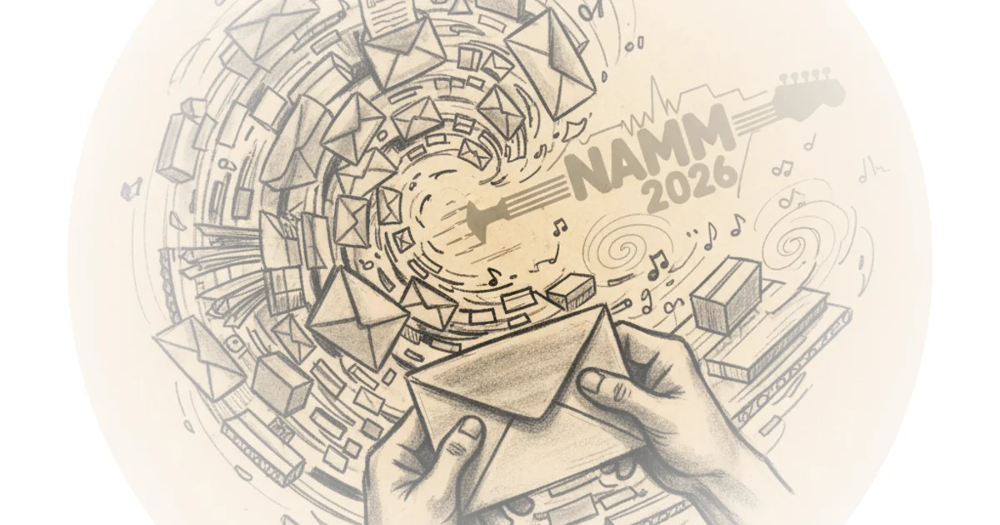

A Pedal Collector Sorting 150 Packages Instead Of Going To A Trade Show", Josh Scott chose to sort mail over attending NAMM 2026—and the packages reveal his deepest obsessions. The JHS Pedals founder recently returned from a cycling accident that left him hospitalized, and he's been buried under an avalanche of gear shipments ever since. Rather than facing the music industry's annual pilgrimage to Anaheim, he decided the most productive use of his time was sorting through 150 pieces of mail that had piled up in his warehouse.
The packages represent years of collector items: vintage fuzz pedals from Europe, rare ElectroHarmonics equipment for an upcoming book project, and gear sent by fans wondering if he'd even seen their contributions. His assistant Elelliana has been checking everything into a digital inventory system—a database that tracks every piece of mail, complete with photos and barcodes.

"Sometimes it gets like this because of how busy I can be," Scott admitted to his live stream audience. "People will send me something and then just like hey did you get the thing? Has Josh seen the thing? And it's just it can become really overwhelming."
The mail reveals his collecting habits in unexpected ways."}, {"heading": "The Cycling Accident", Scott's recent cycling crash in August forced him to pause most operations. While recovering, packages continued arriving—and nobody was checking them in properly. He nearly missed the opportunity to acquire key pieces for his ElectroHarmonics book project.
"I kind of want to go home," he said, visibly overwhelmed by the mountain of gear before him.
The crash also introduced him to a product he'd never encountered: downhill mountain biking helmets. "You know what I learned after I crashed and almost killed myself is they make helmets for your face," he explained, holding up a new helmet from Abus, a European manufacturer. "No one really told me this."
He received the helmet as a gift—along with a bottle that he described as looking very Star Wars."}, {"heading": "Vintage Fuzz Pedals", The packages contain rare vintage fuzz pedals Scott has been hunting for years. A loan from Jonathan offered the impossible-to-find Pluto dual filter—a maestro-style pedal he's always wanted to try.
"This is super cool," he said, examining the device up close. "When we take stuff in, we take really good care of it. It's locked up in this room and I definitely want to do a live stream or something."
He pulled an Electrolab fuzz pedal made in Chicago, Illinois—a tiny plastic fuzz circuit that produced distinctive clicks. The entire back wall contains old quirky fuzz pedals he'll need to organize eventually.
"I kind of want to go home," he said, visibly overwhelmed by the mountain of gear before him."}, {"heading": "The ElectroHarmonics Book Project", Scott is working on a book about ElectroHarmonics history with Daniel Danger and Dan Epstein. Two pieces came in during research but never got checked into inventory.
"If you go to Google right now, your support on that book would be tremendously appreciated because it tells the distributors and the publisher that people like you want books about pedals," he said, asking fans to search "Made on Earth for Rising Stars book"—Jack White's Third Man Books publishing company.
He found another 16-second delay with a foot controller—a new vintage piece. Finding these in working condition is nearly impossible. The boxes alone are valuable: one contained both the pedal box and the foot controller box, which Daniel had but Scott didn't.
"Finding these in working condition is impossible," he said. "This also had the boxes."
The Expedition Electronics 60-cond deluxe represents another take on that famous 16-second delay circuit—something even ElectroHarmonics couldn't clone properly."}, {"heading": "Rare Ampeg And EHX Finds", A series of packages came from someone who visited guitar shows and assembled items specifically for Scott. The most remarkable is a mint condition Ampeg Scrambler with its original box.
"This is a mint condition Ampeg Scrambler with the box," he said, holding up ephemera including an original owner history card from Joseph Dorian Jr. in Minnesota. "And even in here, there's the original Torps Music Center receipt. $43."
He pulled Scholar fuzzes—a German-made variation of the fuzz face circuit with tremolo built in—solid metal units made in England. The Ego mic booster came with strange labels he didn't previously have.
"I only had the one with the input jack," he said, comparing his collection to what arrived.
A Boss ME30 represented an old digital modeler he wants to do an episode about—because people write him notes asking about exactly these kinds of gear."}, {"heading": "The Bottom Line", Scott's mail sorting session reveals the scale of his collecting operation—and how a cycling accident can derail even the most organized system. The 150 packages represent years of accumulated gear, fan submissions, and research materials for upcoming projects.
His biggest vulnerability is logistical: the warehouse downstairs contains 50 boxes of backstock—gear he can't fit in the main room because it's either already filmed or too obscure to address soon. "We actually put that stuff downstairs," he explained.
The strongest part of this argument is his willingness to show fans exactly how messy his operation gets—and why he'd choose sorting mail over a major industry event. The rarest finds came from people who simply sent packages without asking if he needed them."}]}